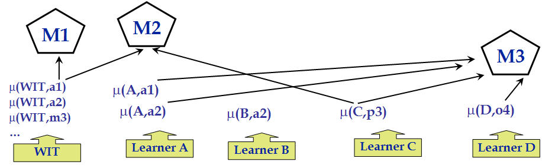

|
|
| Moderating ActiVitiEs of iNtegrated (Maven) | |
Research
Maven is a meta-level reasoner that organizes activities by learners and other agents to learn how to perform complex tasks. Maven models- External state: the Poirot blackboard where all agents post results of their activities
- Effectors: Maven posts meta-goals (tasks) to blackboard that can be achieved by other Poirot agents
- Sensors: Maven subscribes to events on the Poirot BBD
- Meta-Plans: Maven uses meta-plans to reason about the situation and about what should be done next
- Internal state: Maven forms its internal state from what it senses, and uses it to assess learning status and reason about what to do next (what goals to post) In particular, Maven reasons about Task Models that represent body of knowledge about a domain.
Task Models
A Task Model is a body of knowledge about a domain which is assembled from learned models of methods (method hypotheses). Maven creates Task Models and assesses individual Task Models. It also relates TMs to one another and identifies which models supersedes others.

Maven keeps track of issues and credits with a task model. Issues include gaps (e.g. no method for action a3, no preference for a3 vs a7), failures (e.g. failed execution of step7 for Problem2), and failure diagnoses (e.g. model of step6 is faulty, model of s5 faulty) Credits of models include success (e.g. successful plan for Problem1) and agreement (e.g. all models that succeed at Problem1 use (A,a1).
Maven assess learning status with task models and decide which learning goal to achieve next. When new knowledge is created or validated by participating agents, new task models (TM) are created and assessed. The cycle of TM creation, TM assessment and meta goal activation derives the learning process.